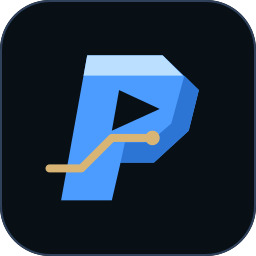

SPORTS INSTINCT. AI PERSPECTIVE.
A mark for the next play.
One identity for the website, the app, and everything that comes next.
THE APP MARK
Recognizable at any size.

The forward P, a play arrow, and a gold route. A single symbol built for small screens.
Same identity. Clear on a light surface.
Midnight#081016
Electric blue#4C9BFF
Ice#BBDFFF
Route gold#D9B575
Silver white#F1F6FF
READY TO USE
Keep the master. Use it everywhere.
SVG masters scale cleanly. Transparent PNGs work in everyday design and website tools.